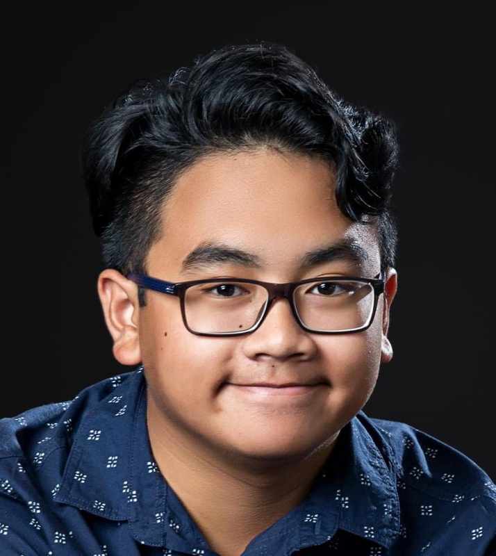

Mark Auman
Summary
I am a game and software developer experienced with Unity, Unreal and Web development.
Education
-
Bachelor Of Games & Interactive Environments
Queensland University of Technology
2020 - 2024
- GPA of 7.0 on a 7-point grading scale
- Received QUT Executive Dean’s Commendation for Academic Excellence in 2023 and 2024
- Awarded place on the Dean's List in Semester 1, 2020
- QUT Scholarship of Excellence Recipient
Work Experience
-
Junior Software Developer
MAXART
January 2025 - Present
- Working as a junior software developer on client-based projects
-
Project Manager
Queensland University of Technology
July 2024 - January 2025
- Worked as a project manager for the QUT Eco Explorations VR Project
-
Research Assistant & VR Developer
Queensland University of Technology
July 2023 - January 2025
- Developed the 3DGDV system for the QUT ARC Mars VR Project for the Faculty Of Science
- Developed a data annotation recording application in Unity for use in a PhD study for the Faculty of Engineering
-
Mobile Developer
Awesome Women In Construction
January 2023 - 2025
- Worked as an independent contractor on a mobile port for my university industry project ‘AWIC: Breaking Ground’
Skills
- C#
- Unity
- Unreal Engine
- JavaScript
- Python
- Maya
- Substance 3D Painter
- Blender
- ZBrush
Awards
- Awarded QUT University Medal